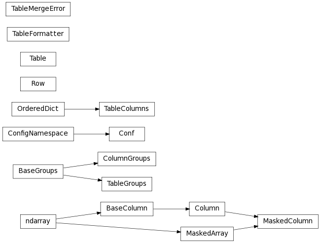

Data Tables (astropy.table)¶
Introduction¶
astropy.table provides functionality for storing and manipulating heterogeneous tables of data in a way that is familiar to numpy users. A few notable features of this package are:
- Initialize a table from a wide variety of input data structures and types.
- Modify a table by adding or removing columns, changing column names, or adding new rows of data.
- Handle tables containing missing values.
- Include table and column metadata as flexible data structures.
- Specify a description, units and output formatting for columns.
- Interactively scroll through long tables similar to using more.
- Create a new table by selecting rows or columns from a table.
- Perform Table operations like database joins and concatenation.
- Manipulate multidimensional columns.
- Methods for Reading and writing Table objects to files
- Hooks for Subclassing Table and its component classes
Currently astropy.table is used when reading an ASCII table using astropy.io.ascii. Future releases of AstroPy are expected to use the Table class for other subpackages such as astropy.io.votable and astropy.io.fits .
Getting Started¶
The basic workflow for creating a table, accessing table elements, and modifying the table is shown below. These examples show a very simple case, while the full astropy.table documentation is available from the Using table section.
First create a simple table with three columns of data named a, b, and c. These columns have integer, float, and string values respectively:
>>> from astropy.table import Table
>>> a = [1, 4, 5]
>>> b = [2.0, 5.0, 8.2]
>>> c = ['x', 'y', 'z']
>>> t = Table([a, b, c], names=('a', 'b', 'c'), meta={'name': 'first table'})
If you have row-oriented input data such as a list of records, use the rows keyword:
>>> data_rows = [(1, 2.0, 'x'),
... (4, 5.0, 'y'),
... (5, 8.2, 'z')]
>>> t = Table(rows=data_rows, names=('a', 'b', 'c'), meta={'name': 'first table'})
There are a few ways to examine the table. You can get detailed information about the table values and column definitions as follows:
>>> t
<Table rows=3 names=('a','b','c')>
array([(1, 2.0, 'x'), (4, 5.0, 'y'), (5, 8..., 'z')],
dtype=[('a', '<i8'), ('b', '<f8'), ('c', 'S1')])
One can also assign an unit to the columns. If any column has an unit assigned, all units would be shown as follows:
>>> t['b'].unit = 's'
>>> t
<Table rows=3 names=('a','b','c') units=(None,'s',None)>
array([(1, 2.0, 'x'), (4, 5.0, 'y'), (5, 8..., 'z')],
dtype=[('a', '<i8'), ('b', '<f8'), ('c', 'S1')])
From within the IPython notebook, the table is displayed as a formatted HTML table:

If you print the table (either from the notebook or in a text console session) then a formatted version appears:
>>> print(t)
a b c
s
--- --- ---
1 2.0 x
4 5.0 y
5 8.2 z
For a long table you can scroll up and down through the table one page at time:
>>> t.more()
You can also display it as an HTML-formatted table in the browser:
>>> t.show_in_browser()
or as an interactive (searchable & sortable) javascript table:
>>> t.show_in_browser(jsviewer=True)
Now examine some high-level information about the table:
>>> t.colnames
['a', 'b', 'c']
>>> len(t)
3
>>> t.meta
{'name': 'first table'}
Access the data by column or row using familiar numpy structured array syntax:
>>> t['a'] # Column 'a'
<Column name='a' unit=None format=None description=None>
array([1, 4, 5])
>>> t['a'][1] # Row 1 of column 'a'
4
>>> t[1] # Row obj for with row 1 values
<Row 1 of table
values=(4, 5.0, 'y')
dtype=[('a', '<i8'), ('b', '<f8'), ('c', 'S1')]>
>>> t[1]['a'] # Column 'a' of row 1
4
One can retrieve a subset of a table by rows (using a slice) or columns (using column names), where the subset is returned as a new table:
>>> print(t[0:2]) # Table object with rows 0 and 1
a b c
s
--- --- ---
1 2.0 x
4 5.0 y
>>> print(t['a', 'c']) # Table with cols 'a', 'c'
a c
--- ---
1 x
4 y
5 z
Modifying table values in place is flexible and works as one would expect:
>>> t['a'] = [-1, -2, -3] # Set all column values
>>> t['a'][2] = 30 # Set row 2 of column 'a'
>>> t[1] = (8, 9.0, "W") # Set all row values
>>> t[1]['b'] = -9 # Set column 'b' of row 1
>>> t[0:2]['b'] = 100.0 # Set column 'b' of rows 0 and 1
>>> print(t)
a b c
s
--- ----- ---
-1 100.0 x
8 100.0 W
30 8.2 z
Add, remove, and rename columns with the following:
>>> t['d'] = [1, 2, 3]
>>> del t['c']
>>> t.rename_column('a', 'A')
>>> t.colnames
['A', 'b', 'd']
Adding a new row of data to the table is as follows:
>>> t.add_row([-8, -9, 10])
>>> len(t)
4
Lastly, one can create a table with support for missing values, for example by setting masked=True:
>>> t = Table([a, b, c], names=('a', 'b', 'c'), masked=True)
>>> t['a'].mask = [True, True, False]
>>> t
<Table rows=3 names=('a','b','c')>
masked_array(data = [(--, 2.0, 'x') (--, 5.0, 'y') (5, 8..., 'z')],
mask = [(True, False, False) (True, False, False) (False, False, False)],
fill_value = (999999, 1e+20, 'N'),
dtype = [('a', '<i8'), ('b', '<f8'), ('c', 'S1')])
>>> print(t)
a b c
--- --- ---
-- 2.0 x
-- 5.0 y
5 8.2 z
Using table¶
The details of using astropy.table are provided in the following sections:
Construct table¶
Access table¶
Modify table¶
Table operations¶
I/O with tables¶
Reference/API¶
astropy.table Module¶
Functions¶
| hstack(tables[, join_type, uniq_col_name, ...]) | Stack tables along columns (horizontally) A join_type of ‘exact’ means that the tables must all have exactly the same number of rows. |
| join(left, right[, keys, join_type, ...]) | Perform a join of the left table with the right table on specified keys. |
| vstack(tables[, join_type, metadata_conflicts]) | Stack tables vertically (along rows) A join_type of ‘exact’ means that the tables must all have exactly the same column names (though the order can vary). |
Classes¶
| Column | Define a data column for use in a Table object. |
| ColumnGroups(parent_column[, indices, keys]) | |
| Conf | Configuration parameters for astropy.table. |
| MaskedColumn | Define a masked data column for use in a Table object. |
| Row(table, index) | A class to represent one row of a Table object. |
| Table([data, masked, names, dtype, meta, ...]) | A class to represent tables of heterogeneous data. |
| TableColumns([cols]) | OrderedDict subclass for a set of columns. |
| TableFormatter | |
| TableGroups(parent_table[, indices, keys]) | |
| TableMergeError |
Class Inheritance Diagram¶
